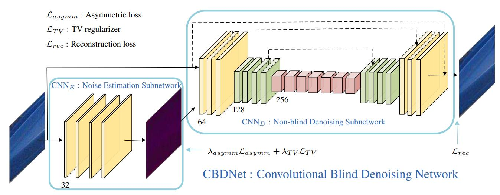
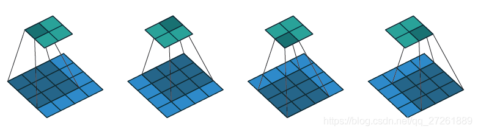
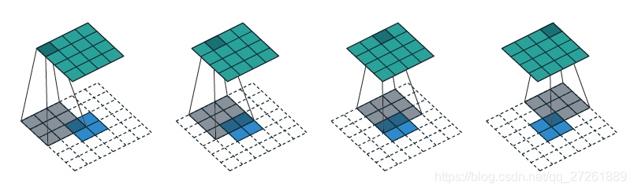
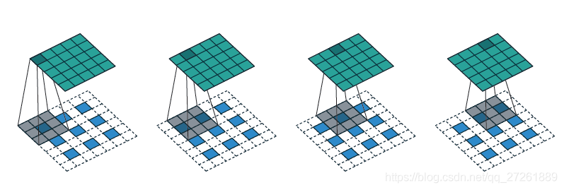

CBDNt&卷积上采样
这篇论文其实自己之前有学习过，不过没有整理，所以在记录整理一下，并且在看实现代码的过程中，对上采样也有了新的学习了解，并做一下记录。
《 Toward Convolutional Blind Denoising of Real Photographs 》， CVPR 2019
CBDNet
论文主要在以下四个部分做出了创新改进：
- 论文不再单纯针对高斯噪声进行去噪，而是主要针对真实噪声，考虑了信号依赖噪声和ISP流程对噪声的影响，展示了图像噪声模型在真实噪声图像中起着关键作用，使用高斯-泊松模型来进行噪声模拟。
- 提出了CBDNet模型，其包括了一个噪声估计子网络和一个非盲去噪子网络，可以实现图像的盲去噪（即未知噪声水平）
- 提出了非对称学习（asymmetric learning）的损失函数，并允许用户交互式调整去噪结果，增强了去噪结果的鲁棒性
- 将合成噪声图像与真实噪声图像一起用于网络的训练，提升网络的去噪效果和泛化能力
真实噪声模型
- 真实噪声分布可以用异方差高斯近似$ n(L)∼N(0,σ^2(L)) $
$ \begin{equation*}{\sigma ^2}({\mathbf{L}}) = {\mathbf{L}} \cdot \sigma _s^2 + \sigma _c^2.\tag{1}\end{equation*} $
- 其中L为辐照图像。$ n(L) = n_s(L) + n_c $, 包含了信号依赖噪声部分 和平稳噪声部分 。其中 常常建模为方差为 $ \sigma _s^2$ 的高斯白噪声，而 常常与图像亮度有关
- 再次基础上进一步考虑ISP流程
$ \begin{equation*}y = f( { \mathbf{DM} } ( {\mathbf{L}} + n({\mathbf{L} )} ) ),\tag{2}\end{equation*} $
- y 就是我们需要的合成噪声图像， f(⋅) 代表了相机响应函数（CRF）, $ L = Mf^{−1}(x)$ 从干净图像生成辐照图像， M(⋅) 表示将sRGB图像转化为Bayer图像 ， DM(•) 实现了去除马赛克功能。
- 去马赛克函数中的线性插值运算涉及到了不同颜色通道的像素，所以合成的噪声是通道依赖的
- 再考虑JPEG压缩
$ \begin{equation*}y = JPEG( f({\mathbf{DM}}( {\mathbf{L}} + {\mathbf{n}}({\mathbf{L}})) ) ).\tag{3}\end{equation*}$
网络模型

- CBDNet包含了两个子网络：噪声估计子网络和非盲去噪子网络
- 噪声估计子网
- 将噪声观测图像y转换为估计的噪声水平图 $ \hatσ(y)$
- 使用五层全卷积网络，卷积核为3×3×32， 使用了1个像素的padding来保证尺寸一致,并且不进行pooling和batch normalization
1 | class FCN(nn.Module): |
- 非盲去噪子网
- 将y和$ \hatσ(y)$作为输入得到最终的去噪结果 $ \hat x$
- 除此之外，噪声估计子网络允许用户在估计的噪声水平图 $ \hatσ(y)$输入到非盲去噪子网络之前对应进行调整
- 使用16层的U-Net结构，且使用残差学习的方式学习残差映射 ，从而得到干净的图像
- 并且实验发现，BN对真实噪声的去除帮助微乎其微。可能的原因是真实噪声非高斯分布。
1 |
|
1 | class CBDNet(nn.Module): |
非对称学习（Asymmetric Learning）
-
作者观察到非盲去噪方法（如BM3D、FFDNet等）对噪声估计的误差具有非对称敏感性，即非盲去噪方法对低估误差比较敏感，而对高估的误差比较鲁棒
-
当输入噪声的标准差与真实噪声的标准差一致时，去噪效果最好
-
当输入噪声标准差低于真实值时，去噪结果包含可察觉的噪声
-
而当输入噪声标准差高于真实值时，去噪结果仍能保持较好的结果，虽然也平滑了部分低对比度的纹理。
-
为了消除这种非对称敏感性，设计了非对称损失函数。
-
给定像素 的估计噪声水平 和真实值 ，当 < $ σ(y_i)$ 时，应该对其MSE引入更多的惩罚
-
$ \begin{equation*} {\mathcal{L}{asymm}} = \sum\limits_i {| {\alpha - {\mathbb{I}{( {\hat \sigma ( ) - \sigma ( )} ) < 0}}} | \cdot {( {\hat \sigma ( {y_i} ) - \sigma ( {y_i} )} )^2}} ,\tag{4}\end{equation*} $
-
当 e<0 时， = 1，否则为0。通过设定0<α<0.5，我们可以对低估误差引入更多的惩罚
-
引入全变分（TV）正则项约束 的平滑性
-
$ \begin{equation*}{\mathcal{L}_{\text{TV}}} = | {\nabla _h\hat \sigma (\mathbf{y})} |_2^2 + | {\nabla _v\hat \sigma (\mathbf{y})} |_2^2,\tag{5}\end{equation*} $
-
为其中沿水平(垂直)方向的梯度算子
-
对于去噪网络输入的 $\hat x $，定义重建误差
-
$ \begin{equation*}{\mathcal{L}_{rec}} = | { \mathbf{\hat x} - \mathbf{x}} |_2^2.\tag{6}\end{equation*} $
-
综上所述，整个CBDNet的目标损失函数为
-
$\begin{equation*}\mathcal{L} = {\mathcal{L}_{rec}} + \lambda {asymm}\mathcal{L}{asymm} + \lambda {TV} \mathcal{L}{TV},\tag{7}\end{equation*} $
1 | class fixed_loss(nn.Module): |
实验
- 数据集： NC12、DND和·Nam
- 损失函数：$ α=0.3 ，λ_1=0.5 ，λ_2=0.05$
- 使用ADAM算法训练网络：
- 最小batch的大小为32，图像块大小为128×128
- 所有模型训练40 epochs，前20epochs使用学习率，然后使用的学习率fine tune模型
卷积上采样
1 | class torch.nn.ConvTranspose2d(in_channels, out_channels, kernel_size, stride=1, padding=0, output_padding=0, groups=1, bias=True, dilation=1) |
- 卷积操作

- 计算公式
- $ out = (in - kernel + 2*padding) / stride + 1$
- 反卷积
- 计算公式
- $ H_{out} = (H_{in} - 1) * stride - 2*padding + kernel_size + output_padding$
- $ W_{out} = (W_{in} - 1) * stride - 2*padding + kernel_size + output_padding$
- 当stride=1时，就不会进行插值操作，只会进行padding

- 首先正向卷积计算，4x4输入，卷积核3x3，stride=1，得到2x2。所以padding=0
- 计算可以得到输出为$ (2-1)1 -20 + 3 +0 = 4$
- 可以看到上面在进行反卷积的时候进行了padding操作
- $ padding_{new} = kernel_size - padding -1 = 3 -0 -1 = 2 $
- 所以下方大小变为$ H_{in} + 2padding_{new} = 2+22=6$
- 当stride=2时，进行插值和padding操作

- 正向计算，5x5输入，卷积核3x3，stride=2，得到3x3。所以padding=1
- 计算可以得到输出为$ (3-1)2 -21 + 3 +0 = 5$
- $ H_{in_new} = H_{in} + (stride-1) * (H_{in}-1) = 3 + (2-1)*(3-1) = 5 $
- $ padding_{new} = kernel_size - padding -1 = 3 -1 -1 = 1 $
- 所以下方大小变为$ H_{in_new} + 2padding_{new} = 5+21=7$
- 计算公式
- 其实没有特别理解，不过大概知道是怎么计算了，也是记录一下，以后可以翻出来再看看
- 主要还是需要记住计算公式！！